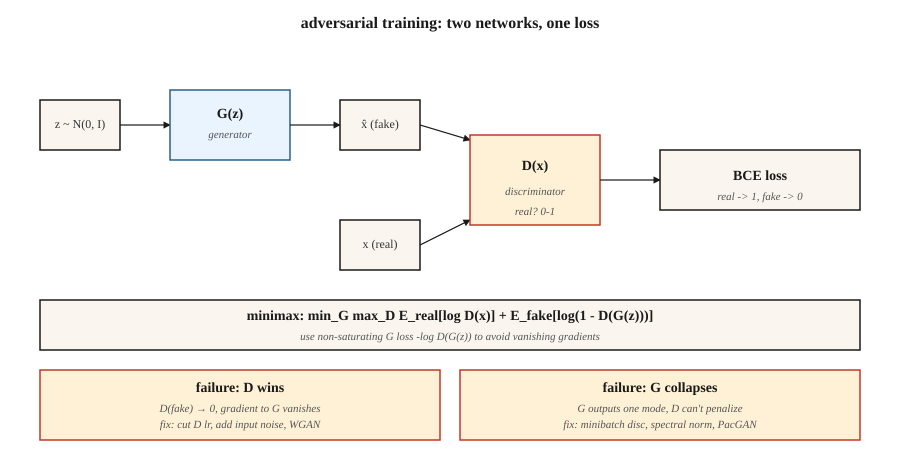

GANs — Generator vs Discriminator
Goodfellow's trick in 2014 was to skip density entirely. Two networks. One makes fakes. One catches them. They fight until the fakes are indistinguishable from real. It shouldn't work. It often doesn't. When it does, the samples are still the sharpest in the literature for narrow domains.
- Type
- Build
- Languages
- Python
- Prerequisites
- Phase 3 · 02 (Backprop), Phase 3 · 08 (Optimizers), Phase 8 · 02 (VAE)
- Time
- ~75 minutes
#The Problem
VAEs produce blurry samples because their MSE decoder loss is Bayes-optimal for the mean image — and the mean of many plausible digits is a fuzzy digit. You want a loss that rewards plausibility, not pixel-wise proximity to any one target. There is no closed-form for plausibility. You have to learn it.
Goodfellow's idea: train a classifier D(x) to distinguish real images from fakes. Train a generator G(z) to fool D. The loss signal for G is whatever D currently thinks makes something look real. This signal updates as G improves, chasing a moving target. If both networks converge, G has learned the data distribution without ever writing down log p(x).
This is adversarial training. The math is a minimax game:
min_G max_D E_real[log D(x)] + E_fake[log(1 - D(G(z)))]In 2026 GANs are no longer the SOTA generator (diffusion and flow matching ate that crown). But StyleGAN 2/3 remain the sharpest face models ever shipped, GAN discriminators are used as perceptual losses in diffusion training, and adversarial training powers the fast 1-step distillations (SDXL-Turbo, SD3-Turbo, LCM) that let you ship real-time diffusion.
#The Concept

Generator G(z). Maps a noise vector z ~ N(0, I) to a sample x̂. A decoder-shaped network (dense or transposed conv).
Discriminator D(x). Maps a sample to a scalar probability (or score). Real → 1, fake → 0.
Loss. Two alternating updates:
- Train
D:loss_D = -[ log D(x) + log(1 - D(G(z))) ]. Binary cross-entropy on real=1, fake=0. - Train
G:loss_G = -log D(G(z)). This is the non-saturating form Goodfellow used (originallog(1 - D(G(z)))saturates and kills gradients whenDis confident).
Training loop. One step of D, one step of G. Repeat.
Why it works. If G perfectly matches p_data, then D cannot do better than chance and outputs 0.5 everywhere; G gets no more gradient. Equilibrium.
Why it breaks. Mode collapse (G finds one mode D can't classify and mints it forever), vanishing gradient (D learns too fast and log D saturates), training instability (learning rates, batch sizes, anything).
#Variants that made GANs work
| Year | Innovation | Fix |
|---|---|---|
| 2015 | DCGAN | Conv/deconv, batch norm, LeakyReLU — the first stable architecture. |
| 2017 | WGAN, WGAN-GP | Replace BCE with Wasserstein distance + gradient penalty. Fixes vanishing gradient. |
| 2017 | Spectral normalization | Lipschitz-bound the discriminator. Still used in 2026 discriminators. |
| 2018 | Progressive GAN | Train low-res first, add layers. First megapixel results. |
| 2019 | StyleGAN / StyleGAN2 | Mapping network + adaptive instance norm. State of the art for fixed-domain photorealism. |
| 2021 | StyleGAN3 | Alias-free, translation-equivariant — still the face gold standard in 2026. |
| 2022 | StyleGAN-XL | Conditional, class-aware, larger scale. |
| 2024 | R3GAN | Rebrands with stronger regularization; works on 1024² without tricks. |
#Build It
code/main.py trains a tiny GAN on 1-D data: a mixture of two Gaussians. Generator and discriminator are single-hidden-layer MLPs. We implement forward, backward, and the minimax loop by hand. The goal is to see the two key failure modes (mode collapse + vanishing gradient) as they happen.
#Step 1: non-saturating loss
The vanilla Goodfellow loss log(1 - D(G(z))) goes to 0 when D classifies G's fake as fake with high confidence. At that point the gradient for G is basically zero — G cannot improve. The non-saturating form -log D(G(z)) has the opposite asymptote: it blows up when D is confident, giving G a strong signal.
def g_loss(d_fake):
# maximize log D(G(z)) <=> minimize -log D(G(z))
return -sum(math.log(max(p, 1e-8)) for p in d_fake) / len(d_fake)#Step 2: one discriminator step per generator step
for step in range(steps):
# train D
real_batch = sample_real(batch_size)
fake_batch = [G(z) for z in sample_noise(batch_size)]
update_D(real_batch, fake_batch)
# train G
fake_batch = [G(z) for z in sample_noise(batch_size)] # fresh fakes
update_G(fake_batch)Fresh fakes for G, otherwise gradients are stale.
#Step 3: watch for mode collapse
if step % 200 == 0:
samples = [G(z) for z in sample_noise(500)]
mode_a = sum(1 for s in samples if s < 0)
mode_b = 500 - mode_a
if min(mode_a, mode_b) < 50:
print(" [!] mode collapse: one mode is starved")The canonical symptom: one of the two real modes stops being generated. The discriminator stops correcting it because it's never seen as a fake.
#Pitfalls
- Discriminator too strong. Cut D's learning rate by 2-5x, or add instance/layer noise. If D reaches >95% accuracy, G is dead.
- Generator memorizes a mode. Add noise to D inputs, use a minibatch-discriminator layer, or switch to WGAN-GP.
- Batch norm leaking statistics. Real batch + fake batch flowing through the same BN layer mixes their statistics. Use instance norm or spectral norm instead.
- Inception-score gaming. FID and IS are noisy at low sample counts. Use ≥10k samples at eval.
- One-shot sampling is a lie for conditional tasks. You still need CFG scales, truncation tricks, and re-sampling to get usable outputs.
#Use It
The 2026 GAN stack:
| Situation | Pick |
|---|---|
| Photoreal human faces, fixed pose | StyleGAN3 (sharpest, smallest) |
| Anime / stylized faces | StyleGAN-XL or Stable Diffusion LoRA |
| Image-to-image translation | Pix2Pix / CycleGAN (Phase 8 · 04) or ControlNet (Phase 8 · 08) |
| Fast 1-step text-to-image | Adversarial distillation of diffusion (SDXL-Turbo, SD3-Turbo) |
| Perceptual loss inside a diffusion trainer | Small GAN discriminator on image crops |
| Anything multi-modal, open-ended | Don't — use diffusion or flow matching |
GANs are sharp but narrow. Once your domain opens up — photos, arbitrary text prompts, video — switch to diffusion. The adversarial trick lives on as a component (perceptual losses, distillation), not a standalone generator.
#Ship It
Save outputs/skill-gan-debugger.md. Skill takes a failing GAN run (loss curves, sample grid, dataset size) and outputs a ranked list of likely causes, one-line fixes, and a rerun protocol.
#Exercises
- Easy. Run
code/main.pywith the stock settings. Then setD_LR = 5 * G_LRand rerun. How fast does G's loss collapse to a constant? - Medium. Replace the Goodfellow BCE loss with the WGAN loss:
loss_D = E[D(fake)] - E[D(real)],loss_G = -E[D(fake)], and clip D's weights to[-0.01, 0.01]. Is training more stable? Compare wall-clock convergence. - Hard. Extend the 1-D example to 2-D data (mixture of 8 Gaussians on a ring). Track how many of the 8 modes the generator captures at steps 1k, 5k, 10k. Implement minibatch discrimination and re-measure.
#Key Terms
| Term | What people say | What it actually means |
|---|---|---|
| Generator | "G" | Noise-to-sample network, G: z → x̂. |
| Discriminator | "D" | Classifier D: x → [0, 1], real vs fake. |
| Minimax | "The game" | min_G max_D of a joint objective. |
| Non-saturating loss | "The fix" | Use -log D(G(z)) for G instead of log(1 - D(G(z))). |
| Mode collapse | "G memorized one thing" | Generator produces few distinct outputs despite diverse data. |
| WGAN | "Wasserstein" | Replace BCE with Earth-Mover distance + gradient penalty; smoother gradient. |
| Spectral norm | "Lipschitz trick" | Constrain D's weight norms to bound its slope; stabilizes training. |
| StyleGAN | "The one that works" | Mapping network + AdaIN; best-in-class for faces, still in 2026. |
#Production note: one-shot inference is GAN's lasting advantage
GANs no longer win on sample quality for open-domain generation, but they still win on inference cost. In production-inference literature vocabulary a GAN has:
- No prefill, no decode stages. A single
G(z)forward pass. TTFT ≈ total latency. - No KV-cache pressure. The only state is the weights. Batch size is bounded by activation memory, not cache.
- Trivial continuous batching. Since every request takes the same fixed FLOPs, a static batch at the server's target occupancy is usually optimal. No in-flight scheduler needed.
This is why GAN distillation (SDXL-Turbo, SD3-Turbo, ADD, LCM) is the dominant technique for fast text-to-image in 2026: it collapses a 20-50-step diffusion pipeline into 1-4 GAN-style forward passes while keeping the distribution of a diffusion base. The adversarial loss survives as a training-time knob for turning slow generators into fast ones.
#Further Reading
- Goodfellow et al. (2014). Generative Adversarial Nets — the original GAN paper.
- Radford et al. (2015). Unsupervised Representation Learning with DCGAN — the first stable architecture.
- Arjovsky, Chintala, Bottou (2017). Wasserstein GAN — WGAN.
- Miyato et al. (2018). Spectral Normalization for GANs — SN.
- Karras et al. (2020). Analyzing and Improving the Image Quality of StyleGAN — StyleGAN2.
- Karras et al. (2021). Alias-Free Generative Adversarial Networks — StyleGAN3.
- Sauer et al. (2023). Adversarial Diffusion Distillation — SDXL-Turbo.
Nice. That's 6 minutes of Generative AI behind you.
Continue to Conditional GANs & Pix2Pix →